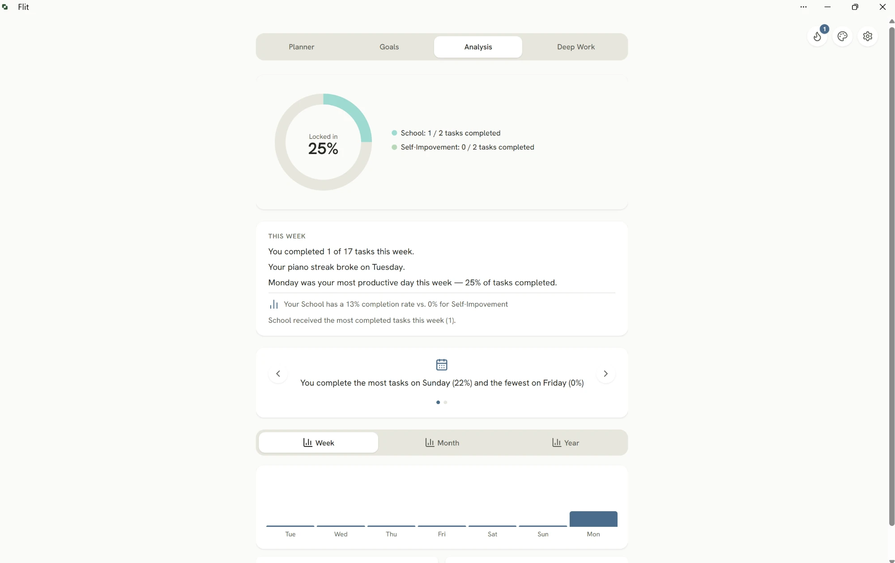
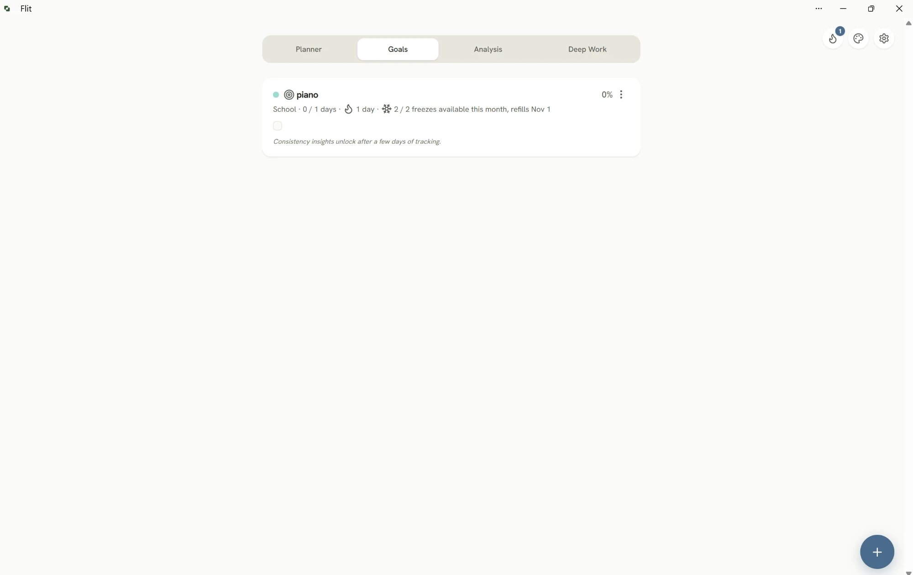
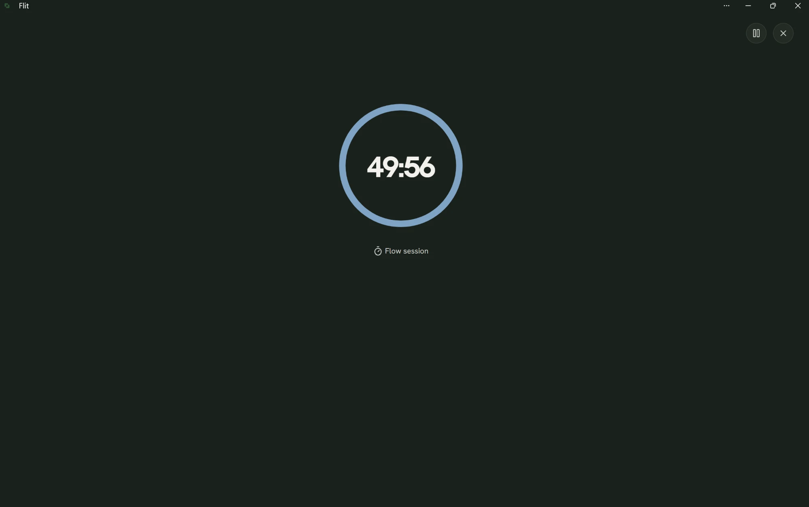

Flit — Personal Operating System
Flit
I kept starting tasks and losing them — half in a notes app, half in my head, most forgotten by evening. Every planner I tried was built for someone managing a calendar full of meetings, not someone trying to actually finish things and see whether they're improving. So I built Flit: a daily planner that treats task management, focus sessions, and progress tracking as one system instead of three separate habits.
Built from the ground up: onboarding, Firebase Auth and Firestore, a premium feature tier, push notifications. Currently in the final stretch before launch.
It runs as a native Android app via Capacitor, built and shipped solo — the same end-to-end scope as everything else here.


